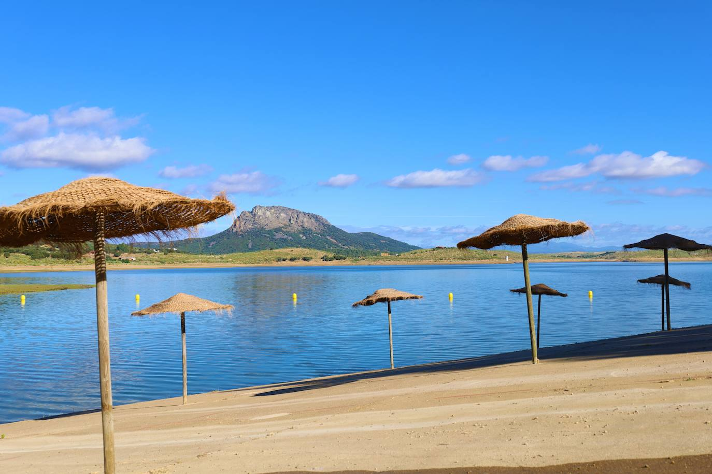
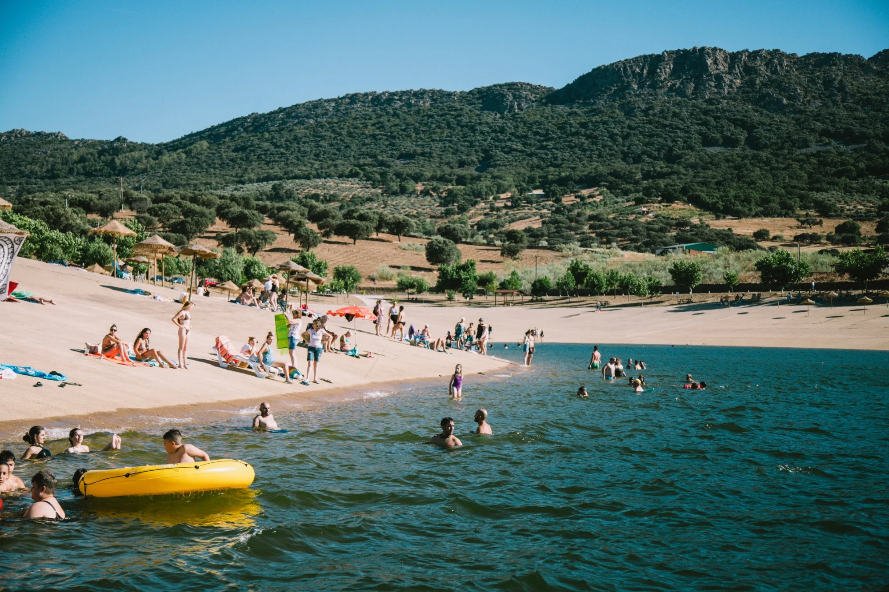
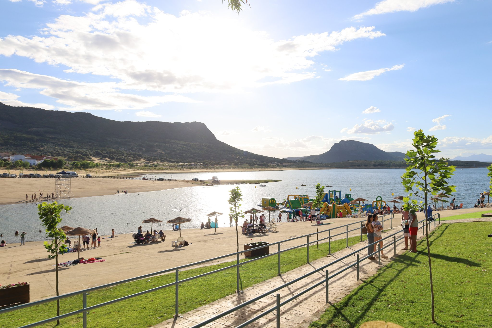
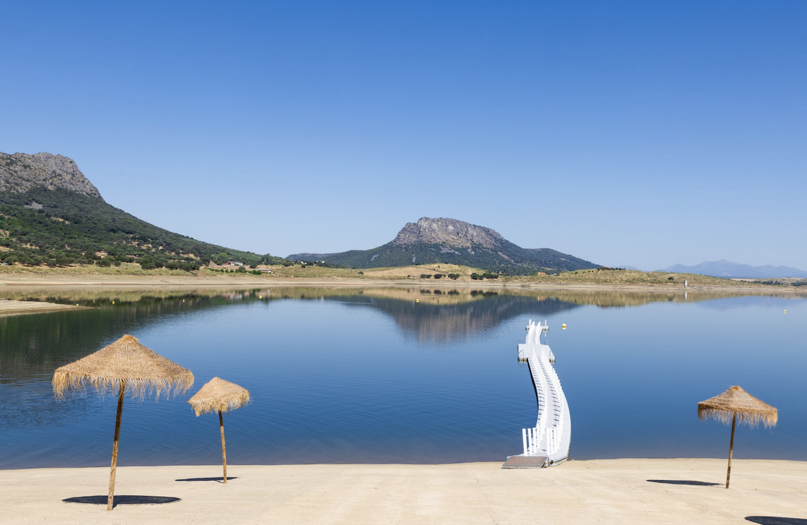

Playa de Peloche
Una playa de agua dulce con bandera azul.
Si quieres disfrutar de un buen baño o la puesta de sol en la playa de Peloche debes coger la carretera BAV-7114 desde Herrera del Duque hacia la presa del Cíjara. La Playa de Peloche es uno de los espacios naturales más conocidos y visitados de Herrera del Duque. Situada en el entorno del embalse de García de Sola, esta zona ofrece un lugar accesible donde disfrutar del agua y del paisaje característico de la comarca.
Se trata de una playa de interior, formada a orillas del embalse, que permite el baño en un entorno tranquilo y rodeado de naturaleza. Su ubicación, a pocos kilómetros del núcleo urbano y próxima a la pedanía de Peloche, la convierte en un punto habitual de encuentro durante los meses más cálidos.
El entorno de la Playa de Peloche destaca por la presencia de vegetación mediterránea, con encinas y monte bajo, que proporcionan sombra y contribuyen a crear un ambiente agradable para el descanso. Además, la amplitud del embalse permite disfrutar de vistas abiertas y de un paisaje natural poco transformado.
Tradicionalmente, este espacio ha sido utilizado por vecinos y visitantes como lugar de ocio, especialmente en verano. Es habitual acudir para pasar el día, bañarse o simplemente disfrutar del entorno natural. También es un lugar adecuado para pasear por la orilla o relajarse en contacto con la naturaleza. El acceso a la zona es sencillo, lo que facilita la llegada de visitantes durante la temporada estival.
La Playa de Peloche forma parte de los recursos naturales más representativos de Herrera del Duque, combinando la cercanía al agua con un entorno rural que mantiene el carácter propio de la comarca. Visitar este lugar es una forma sencilla de conectar con la naturaleza y descubrir uno de los rincones más frecuentados del entorno del embalse.
Galería de fotos



